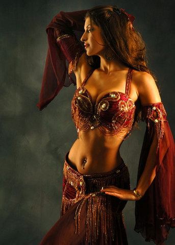
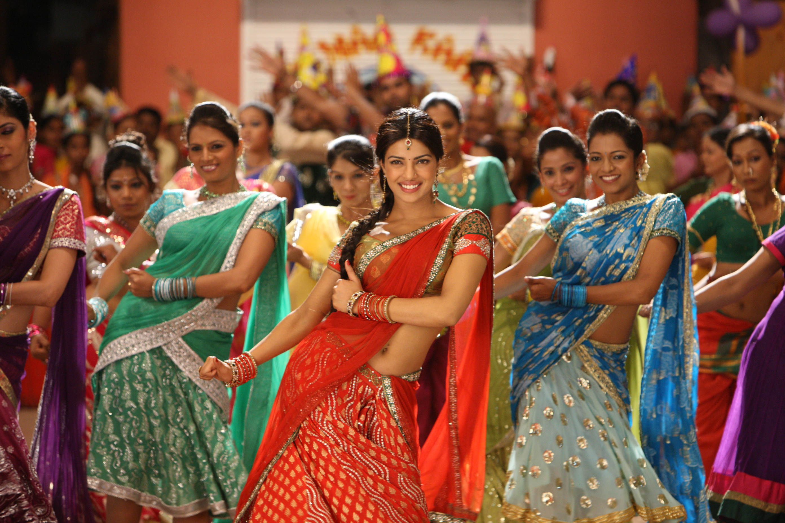

Арабские танцы

Основные танцевальные элементы представляют собой различные комбинации с использованием кругов, волн, ударов, трясок и других наиболее популярных движений, совмещенных с проходками и наложением пластики
Индийские танцы

Это направление отличается от арабского танца техникой исполнения, костюмами, базовыми движенями. Эти танцы быстрые, динамичные и очень эмоциональные, каждый номер — это история, которую исполнитель передаёт зрителю, что делает их очень интересными.